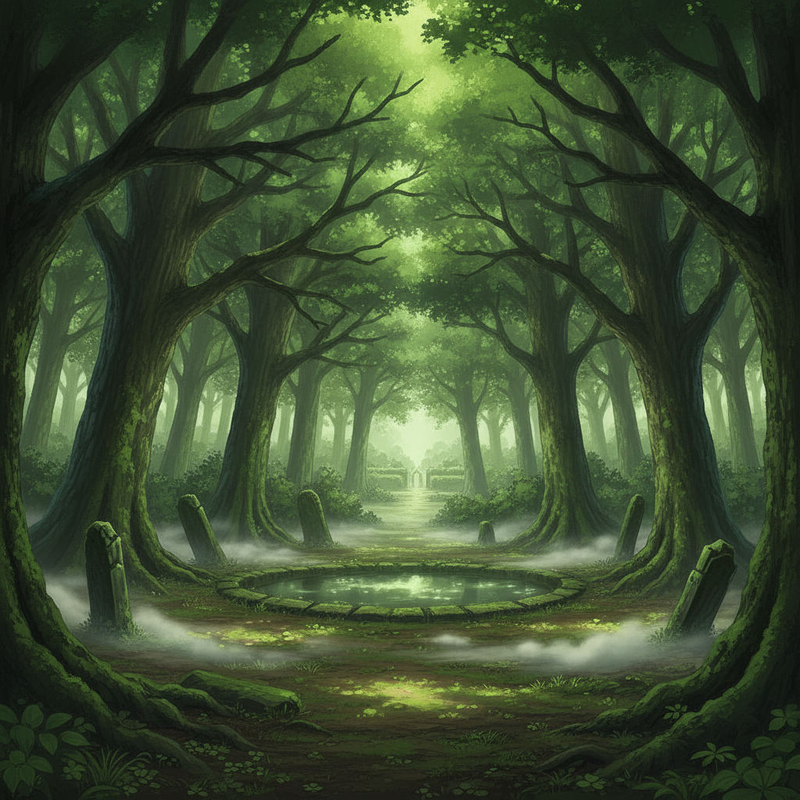
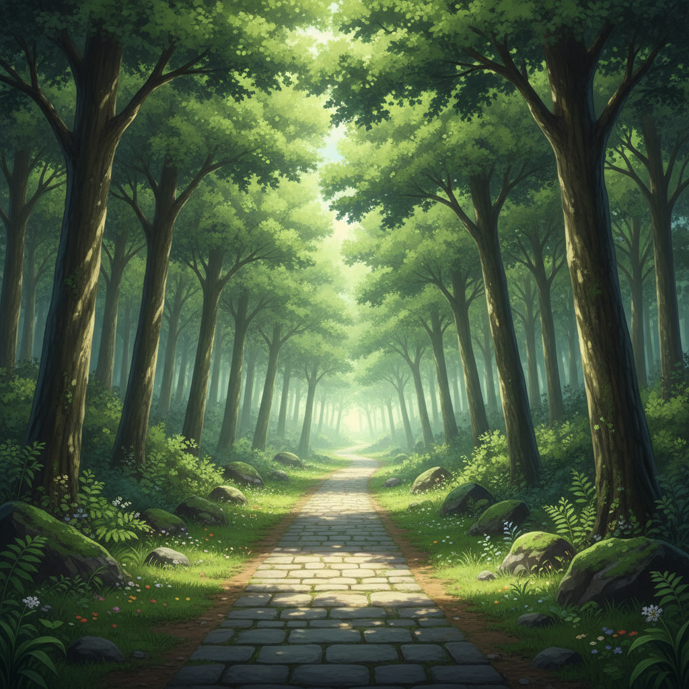

The College Woods, beyond the wards, offer a wild, unpoliced sanctuary. Dappled light filters through the canopy, and the Weave feels closer to the surface here, untamed.

I go alone, honing my senses and hardening my resolve. What I build out here is a self, not a bond.